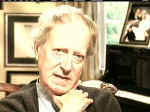
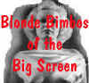

| Somewhere
in Time (SE)/C+,C+ |
| Universal/1980/104/WS
1.85 |
So many people seem to love Somewhere
in Time; every time I've seen it I've tried watching from a fresh perspective. I like time
travel movies, and in fact, these conventions are respected. One can interpret the fantastic
elements from realistic analysis, and it works. The story floats like a like a veil of transparent
gauze. The execution, while it appears a labor of love, leaves me less than breathless.
Young playwright Richard Collier is given a haunting gift by an old woman
on the night of his first theater triumph. Years later, facing writer's block, he makes a trip that
takes him far further than he ever might imagine. Attracted by a gloriously posh opulent nineteenth
century hotel, Collier spends the night and is strangely attracted to the photo portrait of an
actress hanging in the small hotel museum. He cannot escape the magnetism of the image and is
compelled to investigate further.
|
|
|
Reeve |
Seymour |
|
|

|
|
Szwarc |
Barry |
|
| Looking back at Somewhere in Time.
©Universal |
The script by Richard Matheson is
based on his novel Bid Time Return. There's lots of montage work, limited dialogue, and a
thin plot line. The camera work of Isadore Mankofsky and the John Barry score are hugely important
to put Somewhere in Time across. They are effective, but when everything is put together by
director Jeannot Szwarc, there just isn't much there.
Perhaps inspired acting might have raised the film above its simplistic
thematic treatment. Christopher Reeve tries hard as romantic time traveler Richard Collier, but his
looks of wonder are more like smirks, and he often seems like he's playing comedy as opposed to
romance. He's so sincere you almost see his eyelashes batting. Jane Seymour is okay in the role as
Elise McKenna, the object of Richard's desire. She captures a turn of the century beauty in her
carriage and line delivery.
It turns out that both Christophers are problematic. Christopher Plummer may not twirl his mustache
as William Fawcett Robinson, the martinet manager of McKenna, but the performance is pretty close
to broad nineteenth century acting styles.
The moody photography is very grainy and the DVD transfer struggles to
replicate the mood. The grain never looks quite tight enough and the widescreen images could really
have used an anamorphic transfer to extract the most from the problematic film elements. Contrast
levels are frequently flat and delicate compositions somewhat washed out. The highly stylized horse
ride montage fails to bring to life the impressionistic look inspired by artists Seurat or Monet.
Overall resolution is far less than pleasing. Most of the close-ups are all right, but soft image
rules Somewhere in Time. Color rendition is fine. There is some dirt evident in the
elements, but it's minor. The Dolby Digital 2.0 mono sound captured the lush nature of John Barry's
score.
The special edition DVD includes audio commentary from director Jeannot Szwarc
and a full blown original remembrance documentary Back to Somewhere in Time. Szwarc's
comments often overlap the material in the documentary, but along with Szwarc, Christopher Reeve
looks back on making the film, as well as Richard Matheson, Jane Seymour, Christopher Plummer, John
Barry and Isadore Mankofsky. Reeve relates one out body experience that came as a result of
his tragic accident, and it's very poignant indeed. The Somewhere in Time fan club
outlines the history of the club in a short presentation and invites you to participate at http://www.somewhereintime.pair.com. Maybe you too
could take a trip back to the Grand Hotel where much of the film takes place. |
|

Selections from the feature archive include articles on Akira Kurosawa,
Frank Darabont, Blonde Bimbos, Hollywood
Street Gangs, or Vietnam:
The Hollywood Pariah, and many more....
Catch the Hollywood take on Blonde Bimbos by clicking on the
image above.

 Brad Lang continues to add more interesting material to the extensive
collection at Classic
Movies. Everything from actors and actress to your favorite directors is
linked at the site. Brad Lang continues to add more interesting material to the extensive
collection at Classic
Movies. Everything from actors and actress to your favorite directors is
linked at the site.
 Direct from the corridors of the Home Theater Forum, Home Theater Talk is the
newest place on the Net to discuss everything home theater. Friendly atmosphere and knowledgeable
folks are the secret ingredients. Direct from the corridors of the Home Theater Forum, Home Theater Talk is the
newest place on the Net to discuss everything home theater. Friendly atmosphere and knowledgeable
folks are the secret ingredients.

The DVD Forum is an international association of hardware
manufacturers, software firms and other users of Digital Versatile Discs (the "DVD
Format"), created for the purpose of exchanging and disseminating ideas and information about
the DVD Format and its technical capabilities, improvements and innovations.
A vast reservoir of DVD information, reviews, the kitchen sink. Check
out their huge DVD database including reviews from many sites.

The
Movie Poster Archive includes extensive poster images from the films of stars like Susan Hayward,
Kirk Douglas, Katharine Hepburn and many more. Our featured star is Susan Hayward
|